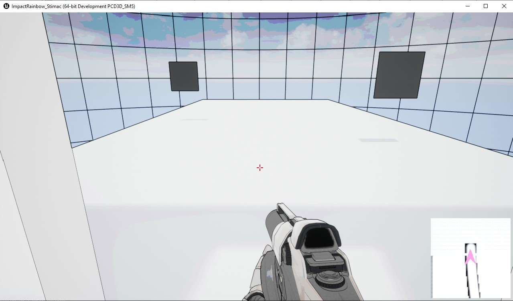

Terrain Generation
Over the course of my final year at SNHU, I was able to create a prototype of a potion game found in the portfolio displaying the AI artifact as well as develope a plan for a more finalized version of the game including terrain generation and a more in-depth potion system. The plan resulted in a proof of concept paper and article as well as an idea of a gameplay system I wanted to integrate into the potion making game. The backbone for this system was terrain generation. I was able to create a prototype terrain using triangle math and shaders, and plan to create rogue-like paths that the player will go down to collect the randomly generated resources for the game.
The proof of concept also details more alterations to the game including a potion making system and the potential for enemies along the paths. While it still needs work the base code functions. To further I will utilize DirectX or Vulkan shaders instead of simply the engine based shaders. The concept for procedurally generated terrain came up in a course following the course where the potion making game cocnept was orignally conceived, so this artifact was able to be seperated from the faulty AI logic.
Blueprint generated from C++ class

TerrainGenerator.h
#include "CoreMinimal.h"
#include "GameFramework/Actor.h"
#include "ProceduralMeshComponent.h"
#include "Materials/MaterialInterface.h"
#include "TerrainGenerator.generated.h"
UCLASS()
class IMPACTRAINBOW_STIMAC_API ATerrainGenerator : public AActor
{
GENERATED_BODY()
public:
// Sets default values for this actor's properties
ATerrainGenerator();
UPROPERTY(EditAnywhere, Meta = (ClampMin = 0))
int XSize = 0; // Number of squares along the x axis
UPROPERTY(EditAnywhere, Meta = (ClampMin = 0))
int YSize = 0; // Number of squares along the y axis
UPROPERTY(EditAnywhere, Meta = (ClampMin = 0.000001))
float Scale = 0.f;// Used to set vertex and
UPROPERTY(EditAnywhere, Meta = (ClampMin = 0.000001))
float UVScale = 0.f; // Used to set UVs
/// for debugging ///
//PostActorCreated calls the CreateSquare function when the actor is spawned into the world.
// virtual void PostActorCreated() override;
// PostLoad is a cleanup function that is called directly after the actor is loaded.
// virtual void PostLoad() override;
protected:
// Called when the game starts or when spawned
// uses begin play instead of Post Load Post Actor Created since it will be generated at begin or tick
virtual void BeginPlay() override;
UPROPERTY(EditAnywhere)
UMaterialInterface* Material;
public:
// Called every frame
virtual void Tick(float DeltaTime) override;
private:
UProceduralMeshComponent* mesh;
TArray<FVector> Vertices;
TArray<FVector> Normals;
TArray<FVector> Normals;
TArray<int> Triangles;
TArray<FVector> Normals;
TArray<FProcMeshTangent> Tangents;
TArray<FVector2D> UV0;
TArray<FColor> Colors;
virtual void CreateVertices();
virtual void CreateTriangles();
};
TerrainGenerator.cpp
#include "DrawDebugHelpers.h"
// Sets default values
ATerrainGenerator::ATerrainGenerator()
{
// Set this actor to call Tick() every frame. You can turn this off to improve performance if you don't need it.
PrimaryActorTick.bCanEverTick = true;
// instantiate root component as Procedural mesh
mesh = CreateDefaultSubobject<UProceduralMeshComponent>("GeneratedMesh");
mesh->SetupAttachment(GetRootComponent());
}
// Called when the game starts or when spawned
void ATerrainGenerator::BeginPlay()
{
Super::BeginPlay();
// generate vertices (UVs, colors) and triangles
CreateVertices();
CreateTriangles();
// Draw triangles to create plane terrain
mesh->CreateMeshSection(0, Vertices, Triangles, Normals, UV0, Colors, Tangents, true);
mesh->SetMaterial(0, Material);
}
// Called every frame
void ATerrainGenerator::Tick(float DeltaTime) {
Super::Tick(DeltaTime);
}
// number of vertices depends on grid size
void ATerrainGenerator::CreateVertices()
{
for (int X = 0; X <= XSize; ++X)
{
for (int Y = 0; Y <= YSize; ++Y)
{
Vertices.Add(FVector(X * Scale, Y * Scale, 0));
UV0.Add(FVector2D(X * UVScale, Y * UVScale));
Colors.Add(FColor::Red);
// Debug
// DrawDebugSphere(GetWorld(), FVector(X * Scale, Y * Scale, 0), 25.f, 16, FColor::Red, true);
}
}
}
// Generates triangles for terrain
// FIXME: Not generating triangles
void ATerrainGenerator::CreateTriangles()
{
int Vertex = 0;
// uses less operator to not create unusable triangles to or past 3
for (int X = 0; X < XSize; ++X)
{
for (int Y = 0; Y < YSize; ++Y)
{
//Bottom Left Triangle
Triangles.Add(Vertex);//BLC
Triangles.Add(Vertex + 1);//BRC
Triangles.Add(Vertex + YSize + 1);//TLC //YSize offsets the direction that the vertices spawn, 1 through YSize will the first row
//Top Right Triangle
Triangles.Add(Vertex + 1);//BRC
Triangles.Add(Vertex + YSize + 2);//TRC
Triangles.Add(Vertex + YSize + 1);//TLC
Vertex++;
}
Vertex++;
}
}
Generated Terrain on play
